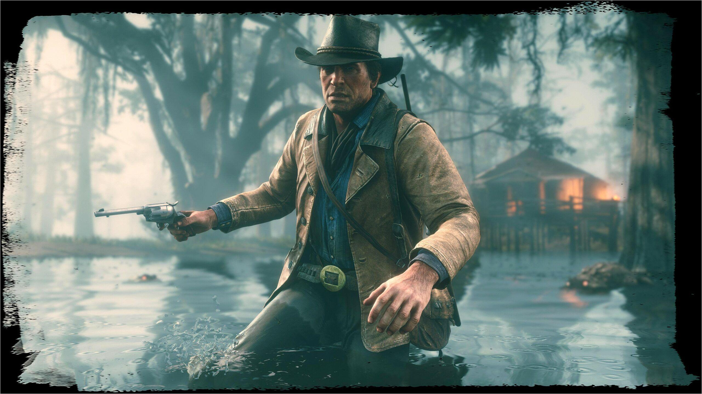
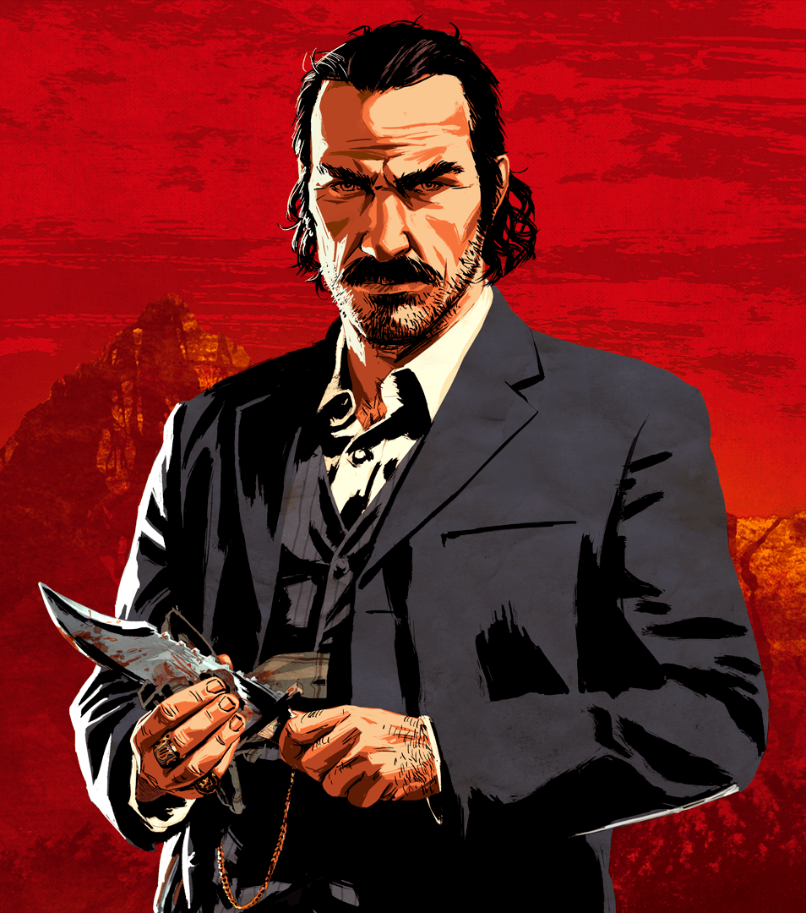

Arthur Morgan
Arthur Morgan je hlavní postavou hry Red Dead Redemption 2. Je zkušeným členem gangu Van der Linde a jedním z nejbližších lidí Dutche van der Linde.

Dutch van der Linde
Dutch van der Linde je vůdcem gangu Van der Linde. Je charismatický, ambiciózní a věří ve svobodu mimo pravidla společnosti.
